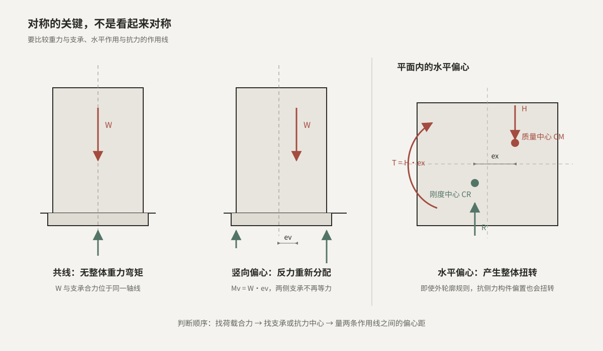

重力偏心使两侧支承不等力
重力合力不通过支承中心时，会形成 Mv = Wev。靠近合力一侧的反力增大，另一侧减小；偏心足够大时甚至可能出现受拉需求。
SYMMETRY · ECCENTRICITY LAB
建筑轮廓对称，只解决了几何问题；真正的受力对称，还要求重力与支承合力共线、水平作用与抗力中心对齐。偏心一旦存在，整体就会多出弯矩或扭矩。
核心概念 / 01
非对称可能来自建筑质量分布，也可能来自支承体系布置，还可能两者同时存在。先把合力和抗力分别找出来，才能判断整体会弯还是会扭。

重力合力不通过支承中心时，会形成 Mv = Wev。靠近合力一侧的反力增大，另一侧减小；偏心足够大时甚至可能出现受拉需求。
地震惯性力可简化为通过质量中心，风荷载合力则通过其作用中心，二者不能混称。本页以地震作用为例：作用线与刚度中心的抗力线错开时，除基底剪力外还产生 T = Hex。
把塔楼、裙房等部分分别作为整体分析，再检查单元之间以及各层接合面的力流。拆分不是忽略整体性，而是明确谁支承谁。
竖向偏心可能与某一方向的水平作用相互抵消，也可能在反方向叠加。由于风与地震作用方向会变化，方案阶段应检查不利组合，而非只观察单一工况。
交互实验 / 02
红色表示作用，绿色表示支承反力与刚度中心。两个实验分别采用双支承立面和双抗侧力线平面简化模型。
右侧为重力偏心方向。反力必须同时满足竖向力平衡和对支承中心的力矩平衡。
Mv = Wev
RL = W / 2 − Mv / B
RR = W / 2 + Mv / B
关系来源：静力平衡 ΣV = 0、ΣM = 0。两支承位于支承中心两侧 ±B/2，重力作用线向右偏移 ev 时，右支承反力增大、左支承反力减小。
本实验以地震惯性力为例，H 通过质量中心 CM，抗力合力通过刚度中心 CR。调整右侧刚度占比，CR 会偏向更强的一侧；两条平行力线错开便形成整体扭矩。
xR = kL(−B/2) + kR(B/2)kL + kR = (2s − 1)B / 2
ex = xM − xR
T = H · ex
关系来源：xR 是两侧抗侧力线刚度的加权中心；ex 是 H 与抗力合力 R 两条平行作用线之间的垂直距离；T 由力偶关系求得。假定楼面为刚性，仅考虑图示单方向平动与扭转。
模型说明：反力与刚度中心仅用于说明整体平衡和几何关系；实际建筑还需考虑多构件刚度、楼板变形、双向作用、偶然偏心及各类荷载组合。
学习完成：对称的判断对象是荷载与抗力；竖向偏心产生弯矩，水平偏心产生扭矩。